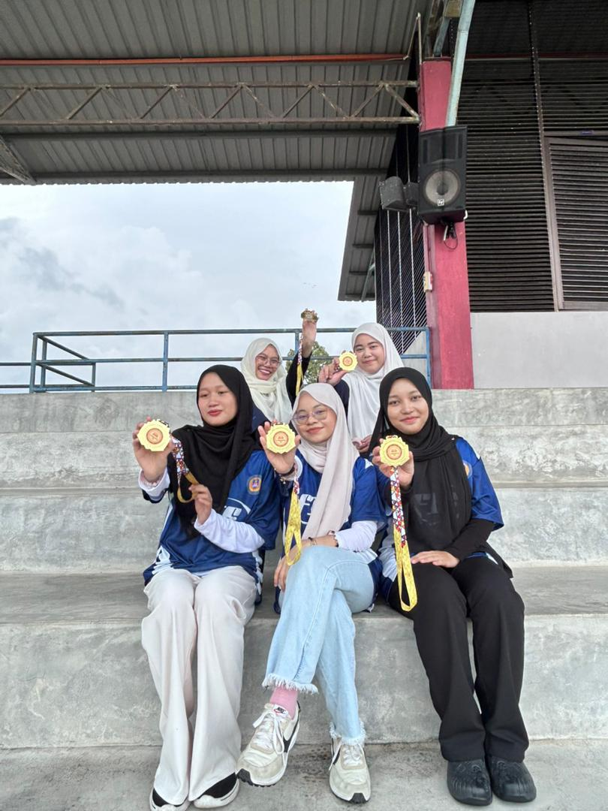
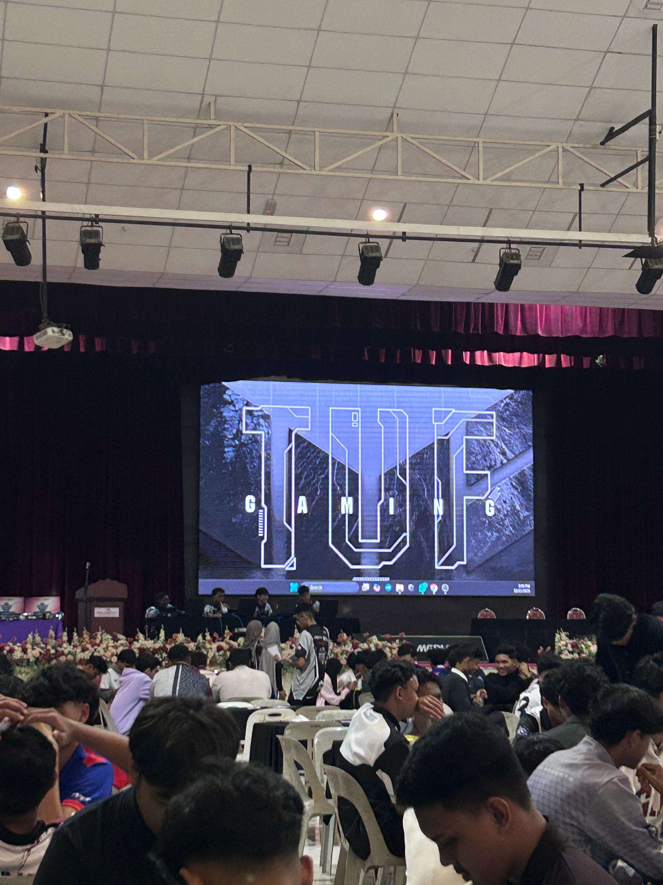
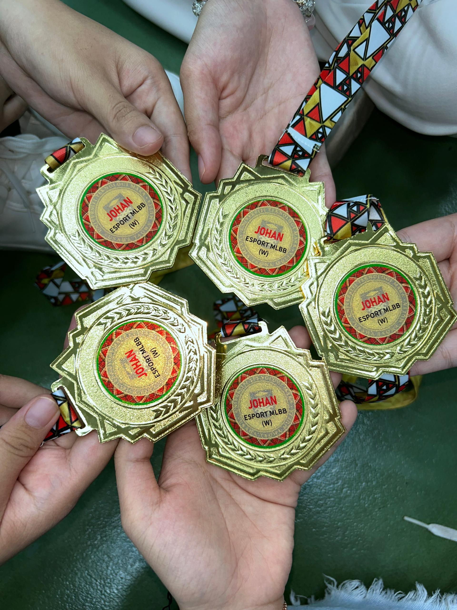

Check out memorable moments & achievements
I started joining e-sports tournaments in Semester 3 by participating in events organized by students. Later, I gained the confidence to represent the faculty (SAF) in the Mobile Legends e-sports competition, and Alhamdulillah, I won the champion title. After that, I represented UiTM Kedah in the university-level Mobile Legends tournament and achieved third place. I was also selected to represent UiTM in e-sports competitions organized by external universities. These experiences are unforgettable because I was able to bring pride to UiTM Kedah through my achievements and victories.